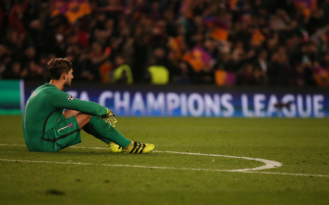

Màn ngược dòng không tưởng đưa Barca vào tứ kết
Trận lượt về vòng 1/8 Champions League chứng kiến Barca viết lại lịch sử bằng hành trình đi từ cõi chết trở về với sự sống đúng ở những giây phút cuối cùng, khi họ hạ PSG 6-1, để thắng chung cuộc 6-5.
Barca thua 0-4 từ lượt đi trên đất Pháp, kết quả được cho là đẩy họ vào cửa tử, vì lịch sử Champions League ở các giai đoạn đấu knock-out chưa chứng kiến bất kỳ đội bóng nào thua trắng bốn bàn có thể đảo ngược tình thế để thoát hiểm. Dù vậy, HLV Enrique và các học trò vẫn quyết tâm viết lại lịch sử, làm nên điều kỳ diệu ở lượt về. Hơn 90.000 CĐV Barca có mặt tại Nou Camp cũng tin vào điều ấy.
Và thực tế đã chứng minh rằng thầy trò Enrique không nói suông khi phát biểu trước trận: "Nếu một đội như PSG có thể ghi bốn bàn, Barca đủ sức ghi sáu bàn".
Barca nhập cuộc mạnh mẽ và mở tỷ số ngay phút thứ ba, với tình huống Luis Suarez đánh đầu ngược.
Được khích lệ nhờ bàn thắng sớm, Barca gây sức ép khủng khiếp sang phần sân PSG. Đội bóng Pháp hầu như không có bóng, không tổ chức được các tình huống tấn công và chỉ không để lọt lưới thêm trong khoảng nửa tiếng đồng hồ sau đó nhờ sự gồng mình từ hàng thủ.
Đội chủ nhà chỉ nhờ may mắn mới có được bàn thứ hai, khi Iniesta thực hiện cú đánh gót khiến Kurzawa lúng túng đá phản lưới nhà ở phút 40.
Để thua hai bàn trong hiệp đầu, PSG dường như chịu sức ép rất lớn khi vào hiệp hai. Phút 49, hậu vệ phải Thomas Meunier vấp ngã và dường như đã dùng đầu để cản ngã Neymar.
Bất chấp sự phản đối quyết liệt từ phía PSG, trọng tài chính vẫn thổi phạt đề sau khi tham khảo ý kiến trợ lý. Messi nhận trọng trách từ chấm 11 mét và không mắc sai sót nào, đánh bại thủ môn Kevin Trapp, nâng tỷ số lên 3-0.
PSG lúc này như bừng tỉnh. Họ vùng lên mạnh mẽ và có bàn gỡ 1-3 ở phút 62 nhờ cú dứt điểm của trung phong Edinson Cavani.
Với tỷ số 3-1 này, PSG vẫn dẫn chung cuộc 5-3 và có lợi thế ghi một bàn trên sân khách. Họ lên tinh thần và khiến hàng thủ Barca lắm phen thót tim. Tuy nhiên, đội bóng Pháp lại gặp vấn đề ở khâu dứt điểm. Một trong những cơ hội bị bỏ lỡ trong giai đoạn giữa hiệp hai này thuộc về Angel Di Maria khi anh đưa bóng đi vọt xà trong thế đối mặt thủ môn Ter Stegen.
Không tận dụng được những cơ hội ấy, PSG phải trả giá đắt ở phút 88 khi Neymar đá phạt hàng rào đẹp mắt, nâng tỷ số trận lượt về lên 4-1.
Barca chơi như lên đồng sau bàn thắng đó của Neymar, và biến những phút bù giờ trở thành cơn ác mộng với PSG. Phút 90, Marquinhos phạm lỗi với Suarez trong khu vực 16m50 và Neymar thực hiện thành công quả phạt đền, nâng tỷ số lên 5-1.
Tỷ số 5-1 này đồng nghĩa với việc hai đội hoà 5-5 qua hai lượt trận và nếu trận đấu kết thúc ngay lúc đó, PSG đoạt vé đi tiếp, theo luật bàn thắng sân khách. Tuy nhiên, đến phút 90+5, Barca ghi bàn quyết định. Từ quả tạt của Neymar, Sergi Roberto băng vào đá nối kịp thời, hạ thủ môn Kevin Trapp, ấn định thắng lợi 6-1 (6-5 chung cuộc) trước PSG.
Sân Nou Camp như nổ tung trong niềm phấn khích tột độ, khi chứng kiến đội nhà làm nên cú rướn mình lịch sử, để lách qua khe cửa sinh tử.
Đây là lần đầu tiên trong lịch sử Champions League chứng kiến một đội bóng thua với bốn bàn cách biệt ở lượt đi giai đoạn đấu knock-out có thể đảo ngược tình thế, giành vé đi tiếp.
Với PSG, tất cả mông lung như một trò đùa. Họ đã làm tất cả những gì cần và có thể để nuôi hy vọng vào tứ kết, từ thắng 4-0 ở lượt đi, giữ vững tỷ số chung cuộc 5-5 đến tận phút 90+4 của trận lượt về. Nhưng ngần ấy vẫn là chưa đủ, để Kevin Trapp và đồng đội vượt qua Barca.